P11
3D
- Diffusion on various 3D representations
- 2D diffusion models for 3D generation
- Diffusion models for view synthesis
- 3D reconstruction
- 3D editing
Diffusion on various 3D representations
P12
3D Shape Generation and Completion through Point-Voxel Diffusion
A set of points with location information.
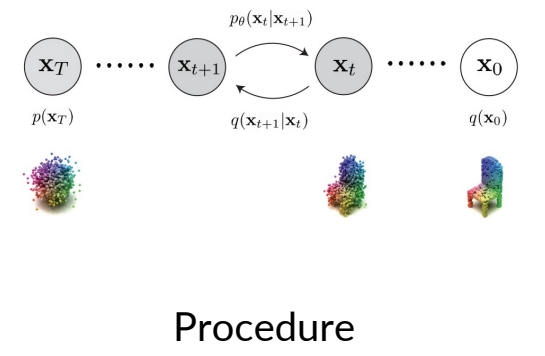
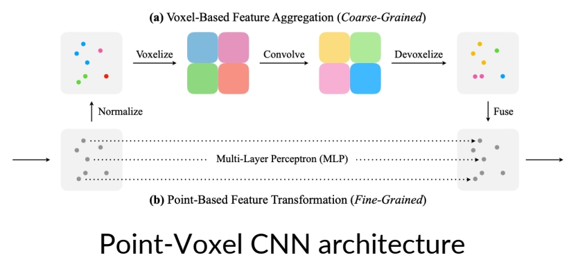
Zhou et al., "3D Shape Generation and Completion through Point-Voxel Diffusion", ICCV 2021
Liu et al, "Point-Voxel CNN for Efficient 3D Deep Learning", NeurIPS 2019
✅ 分支1：逐顶点的 MLP (对应图中 b)
✅ 分支2：VOX 可以看作是低分辨率的 points
✅ 优点是结构化，可用于 CNN
❓ VOX → points，低分辨到高分辨率要怎么做？
❓ 怎么把 voxel 内的点转换为 voxel 的特征？
P13
Result
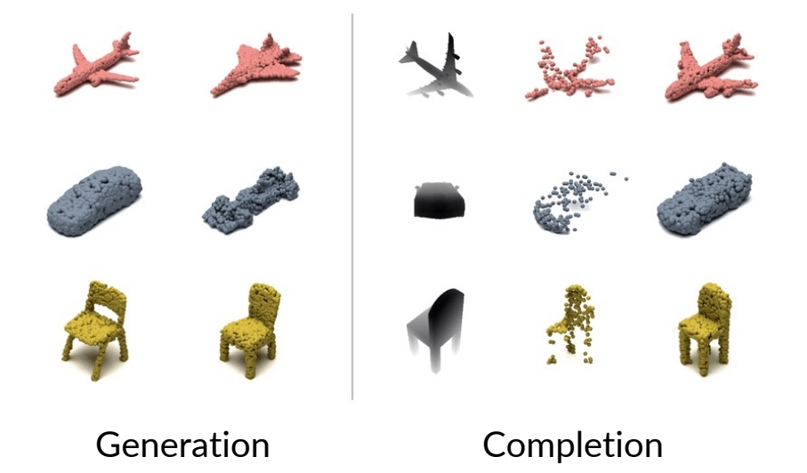
✅ Completion：深度图 → 完整点
✅ 方法：(1) 基于深度图生成点云 (2) 用 inpainting 技术补全
✅ generation 和 completion 是两种不同的 task.
P14
LION
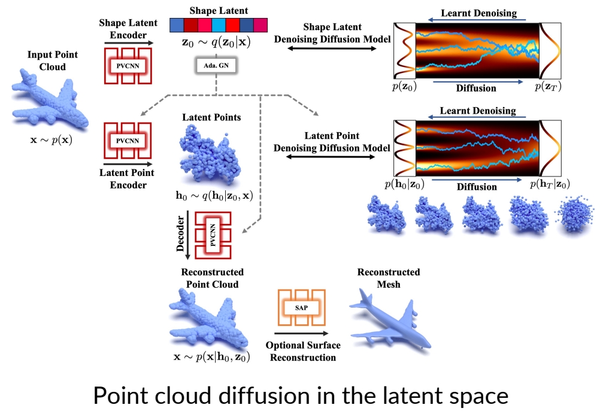
Zeng et al., "LION: Latent Point Diffusion Models for 3D Shape Generation", NeurIPS 2022
✅ 特点：
✅ 1、latent diffusion model for point clouds.
✅ 2、point-voxel CNN 架构，用于把 shape 编码成 latent shape 及 lantent point.
✅ 3、diffusion model 把 latent point 重建出原始点。
P15
Point-E
Point-E uses a synthetic view from fine-tuned GLIDE, and then ”lifts” the image to a 3d point cloud.
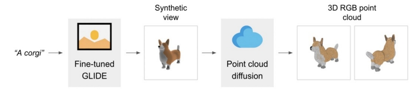
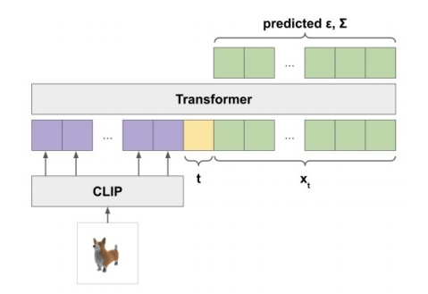
Nichol et al., "Point-E: A System for Generating 3D Point Clouds from Complex Prompts", arXiv 2022
✅ point E task：文生成点云。
✅ 第1步：文生图，用 fine-tuned GLIDE
✅ 第2步：图生点，用 transformer-based diffusion model.
P16
Diffusion Models for Signed Distance Functions
SDF is a function representation of a surface.
For each location x, |SDF(x)| = smallest distance to any point on the surface.
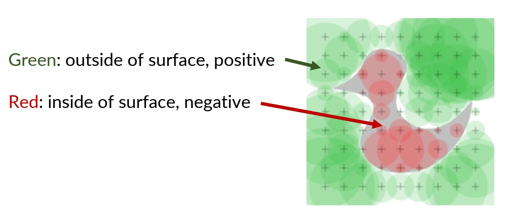
P17
Neural Wavelet-domain Diffusion for 3D Shape Generation
- Memory of SDF grows cubically with resolution
- Wavelets can be used for compression!
- Diffusion for coarse coefficients, then predict detailed ones.
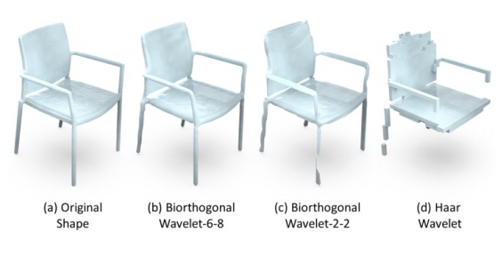
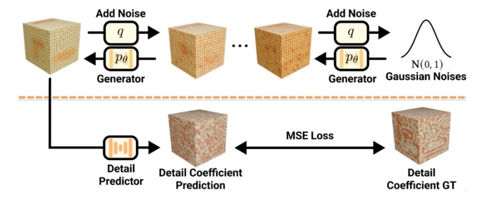
Hui et al., "Neural Wavelet-domain Diffusion for 3D Shape Generation", arXiv 2022
✅ 这里说的 SDF，是用离散的方式来记录每个点的 distance.
✅ Wavelet 把 SDF 变为 coarse 系数，diffusion model 生成 coarse 系数，再通过另一模型变为 detailed
P18
DiffusionSDF
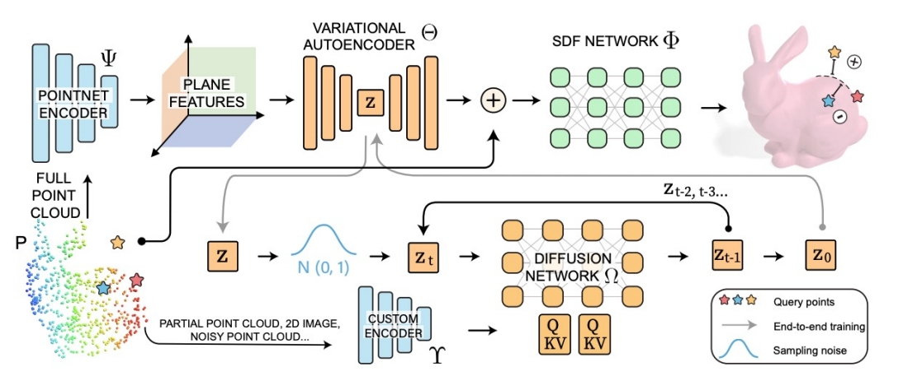
Latent space diffusion for SDFs, where conditioning can be provided with cross attention
Chou et al., "DiffusionSDF: Conditional Generative Modeling of Signed Distance Functions", arXiv 2022
✅ 原理与上一页相似，只是把 waveles 换成了 VAE.
P19
Diffusion Models for NeRF
Neural Radiance Fields (NeRF) is another representation of a 3D object.
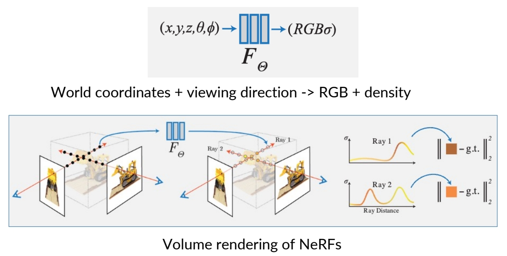
✅ NeRF：用体的方式来描述 3D 物体
✅ (1) 从 diffusion 中提取 image （2）从 image 计算 loss (3) loss 更新 image (4) image 更新 NeRF．
✅ \(（x,y,z,\theta ,\phi ）\) 是每个点在向量中的表示，其中前三维是 world coordinate，后面两维是 viewing direction
✅ density 描述这个点有多透明。
✅ F 是一个小型的网络，例如 MLP.
P20
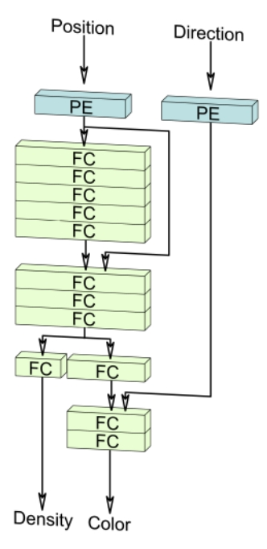
NeRF
(Fully implicit)
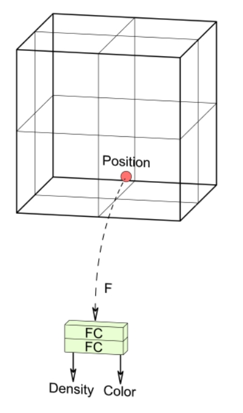
Voxels
(Explicit / hybrid)
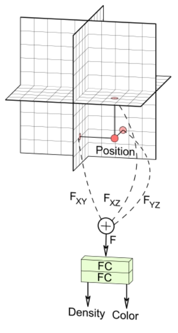
Triplanes
(Factorized, hybrid)
Image from EG3D paper.
P21
✅ Nerf 可以有三种表示形式
- Triplanes, regularized ReLU Fields, the MLP of NeRFs...
- A good representation is important!
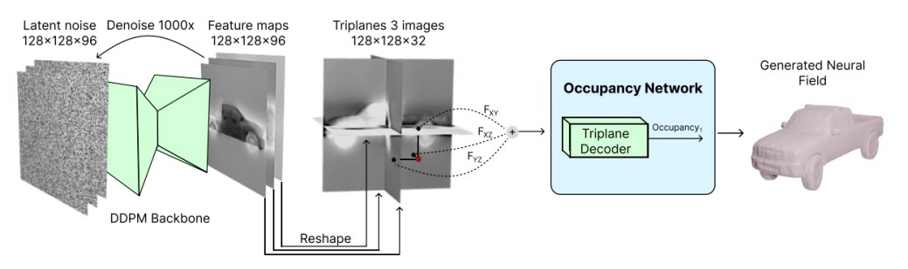
Triplane diffusion
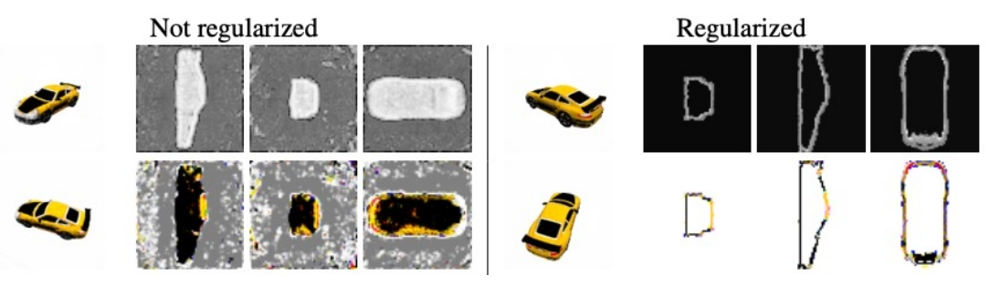
Regularized ReLU Fields
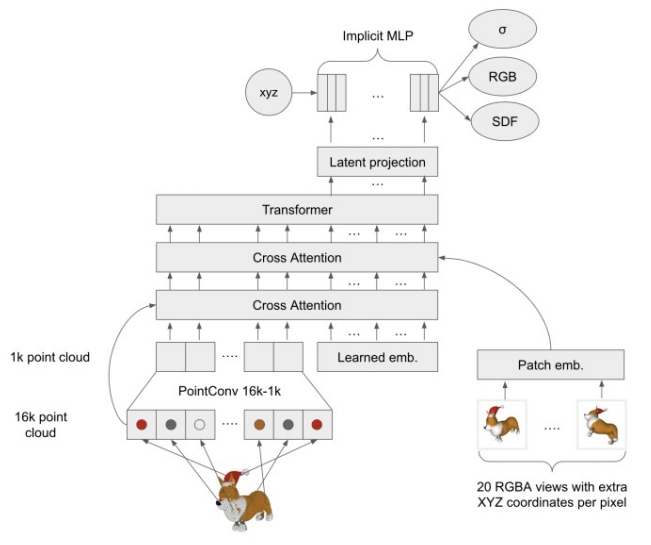
Implicit MLP of NeRFs
Shue et al., "3D Neural Field Generation using Triplane Diffusion", arXiv 2022
Yang et al., "Learning a Diffusion Prior for NeRFs", ICLR Workshop 2023
Jun and Nichol, "Shap-E: Generating Conditional 3D Implicit Functions", arXiv 2023
✅ 这三种表示形式都可以与 diffuson 结合。
✅ 好的表示形式对diffusion 的效果很重要。
本文出自CaterpillarStudyGroup，转载请注明出处。
https://caterpillarstudygroup.github.io/ImportantArticles/